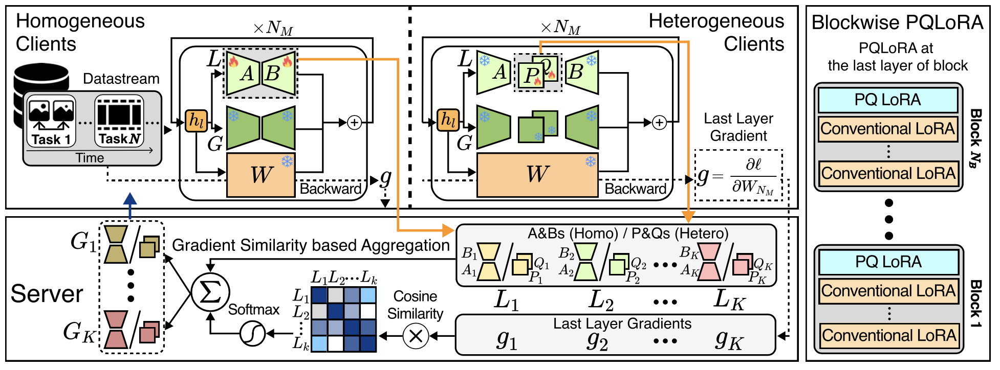

|
I'm a 1st-year MS. student in Electronics and Computer Engineering at Machine Perception and Reasoning Lab. at Seoul National University advised by Prof. Jonghyun Choi. My research focus is on continual learning, federated learning, model safety, and machine unlearning. I received B.S. from Yonsei University in Computer Science under the supervision of Prof. Jonghyun Choi. CV / Email / Google Scholar / LinkedIn / Github |

|

|
Ashkan Yousefpour*, Taeheon Kim*, Ryan S. Kwon, Seungbeen Lee, Wonje Jeung, Seungju Han, Alvin Wan, Harrison Ngan, Youngjae Yu, Jonghyun Choi, ACL 2025 Main (to appear) [pdf] [bibtex] [code] |
|
 |
Minhyuk Seo*, Taeheon Kim*, Hankook Lee, Jonghyun Choi, Tinne Tuytelaars CVPRW 2025 @ MMFM (Work in Progress) |

|
Dongjae Jeon*, Wonje Jeung*, Taeheon Kim, Albert No, Jonghyun Choi arXiv [pdf] [bibtex] |
-
1st Place in Continual Test-time Adaptation for Object Detection - VCL Workshop @ ICCV 2023 [technical report]
-
2nd Place in Class-Incremental with Repetition (CIR) using Unlabeled Data - 5th CLVISION workshop @ CVPR 2024
|
This template is from Jon Barron. |